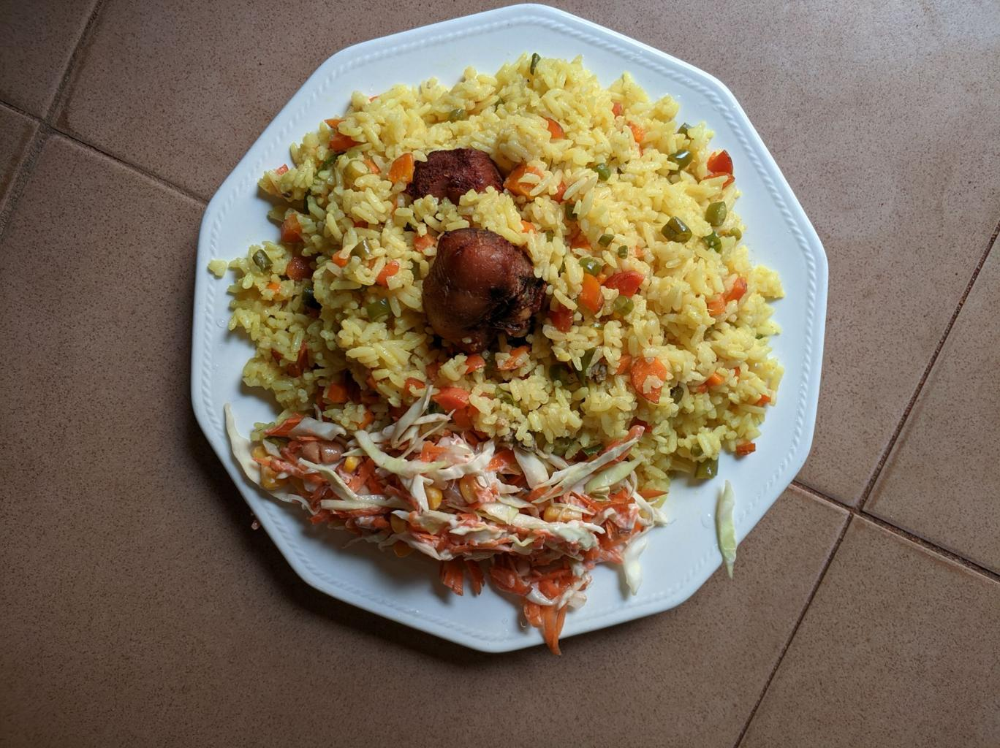

Fried Rice Recipe

Description
this is a sweet delicacy of fried rice
Ingredients
- 2 cups cooked rice
- 1 cup mixed vegetables (carrots, peas, sweet corn)
- 2 eggs
- 1 onion (chopped)
- 2 tbsp soy sauce
- Vegetable oil
- Chicken pieces (optional)
Steps
- Heat oil in a pan.
- Fry onions until soft.
- Add vegetables and cook for 3–5 minutes.
- Push vegetables aside and scramble the eggs.
- Add rice and soy sauce.
- Stir everything together and cook for 5 minutes.